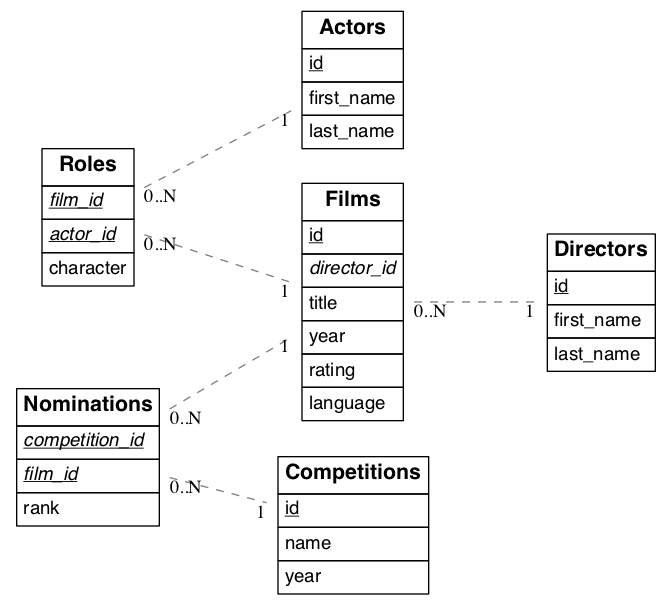

Tables and Views¶
All views and tables in the active schema and accessible by the active database role for a request are available for querying. They are exposed in one-level deep routes. For instance the full contents of a table people is returned at
GET /people HTTP/1.1
There are no deeply/nested/routes. Each route provides OPTIONS, GET, POST, PATCH, and DELETE verbs depending entirely on database permissions.
Note
Why not provide nested routes? Many APIs allow nesting to retrieve related information, such as /films/1/director. We offer a more flexible mechanism (inspired by GraphQL) to embed related information. It can handle one-to-many and many-to-many relationships. This is covered in the section about Resource Embedding.
Horizontal Filtering (Rows)¶
You can filter result rows by adding conditions on columns, each condition a query string parameter. For instance, to return people aged under 13 years old:
GET /people?age=lt.13 HTTP/1.1
Multiple parameters can be logically conjoined by:
GET /people?age=gte.18&student=is.true HTTP/1.1
Multiple parameters can be logically disjoined by:
GET /people?or=(age.gte.14,age.lte.18) HTTP/1.1
Complex logic can also be applied:
GET /people?and=(grade.gte.90,student.is.true,or(age.gte.14,age.is.null)) HTTP/1.1
These operators are available:
| Abbreviation | Meaning | PostgreSQL Equivalent |
|---|---|---|
| eq | equals | = |
| gt | greater than | > |
| gte | greater than or equal | >= |
| lt | less than | < |
| lte | less than or equal | <= |
| neq | not equal | <> or != |
| like | LIKE operator (use * in place of %) | LIKE |
| ilike | ILIKE operator (use * in place of %) | ILIKE |
| in | one of a list of values e.g.
?a=in.(1,2,3) – also supports commas
in quoted strings like
?a=in.("hi,there","yes,you") |
IN |
| is | checking for exact equality (null,true,false) | IS |
| fts | Full-Text Search using to_tsquery | @@ |
| plfts | Full-Text Search using plainto_tsquery | @@ |
| phfts | Full-Text Search using phraseto_tsquery | @@ |
| cs | contains e.g. ?tags=cs.{example, new} |
@> |
| cd | contained in e.g. ?values=cd.{1,2,3} |
<@ |
| ov | overlap (have points in common),
e.g. ?period=ov.[2017-01-01,2017-06-30] |
&& |
| sl | strictly left of, e.g. ?range=sl.(1,10) |
<< |
| sr | strictly right of | >> |
| nxr | does not extend to the right of,
e.g. ?range=nxr.(1,10) |
&< |
| nxl | does not extend to the left of | &> |
| adj | is adjacent to, e.g. ?range=adj.(1,10) |
-|- |
| not | negates another operator, see below | NOT |
To negate any operator, prefix it with not like ?a=not.eq.2 or ?not.and=(a.gte.0,a.lte.100) .
For more complicated filters you will have to create a new view in the database, or use a stored procedure. For instance, here’s a view to show “today’s stories” including possibly older pinned stories:
CREATE VIEW fresh_stories AS
SELECT *
FROM stories
WHERE pinned = true
OR published > now() - interval '1 day'
ORDER BY pinned DESC, published DESC;
The view will provide a new endpoint:
GET /fresh_stories HTTP/1.1
Full-Text Search¶
The fts filter mentioned above has a number of options to support flexible textual queries, namely the choice of plain vs phrase search and the language used for stemming. Suppose that tsearch is a table with column my_tsv, of type tsvector. The follow examples illustrate the possibilities.
# Use language in fts query
GET /tsearch?my_tsv=fts(french).amusant
# Use plainto_tsquery and phraseto_tsquery
GET /tsearch?my_tsv=plfts.The%20Fat%20Cats
GET /tsearch?my_tsv=phfts.The%20Fat%20Rats
# Combine both
GET /tsearch?my_tsv=phfts(english).The%20Fat%20Cats
# "not" also working
GET /tsearch?my_tsv=not.phfts(english).The%20Fat%20Cats
Using phrase search mode requires PostgreSQL of version at least 9.6 and will raise an error in earlier versions of the database.
Vertical Filtering (Columns)¶
When certain columns are wide (such as those holding binary data), it is more efficient for the server to withhold them in a response. The client can specify which columns are required using the select parameter.
GET /people?select=first_name,age HTTP/1.1
[
{"first_name": "John", "age": 30},
{"first_name": "Jane", "age": 20}
]
The default is *, meaning all columns. This value will become more important below in Resource Embedding.
You can rename the columns by prefixing them with an alias followed by the colon : operator.
GET /people?select=fullName:full_name,birthDate:birth_date HTTP/1.1
[
{"fullName": "John Doe", "birthDate": "04/25/1988"},
{"fullName": "Jane Doe", "birthDate": "01/12/1998"}
]
Casting the columns is possible by suffixing them with the double colon :: plus the desired type.
GET /people?select=full_name,salary::text HTTP/1.1
[
{"full_name": "John Doe", "salary": "90000.00"},
{"full_name": "Jane Doe", "salary": "120000.00"}
]
You can specify a json path for a json or jsonb column using the arrow operators(-> or ->>) as per the PostgreSQL docs.
GET /people?select=id,json_data->>blood_type,json_data->phones HTTP/1.1
[
{ "id": 1, "blood_type": "A+", "phones": [{"country_code": "61", "number": "917-929-5745"}] },
{ "id": 2, "blood_type": "O+", "phones": [{"country_code": "43", "number": "512-446-4988"}, {"country_code": "43", "number": "213-891-5979"}] }
]
GET /people?select=id,json_data->phones->0->>number HTTP/1.1
[
{ "id": 1, "number": "917-929-5745"},
{ "id": 2, "number": "512-446-4988"}
]
Computed Columns¶
Filters may be applied to computed columns as well as actual table/view columns, even though the computed columns will not appear in the output. For example, to search first and last names at once we can create a computed column that will not appear in the output but can be used in a filter:
CREATE TABLE people (
fname text,
lname text
);
CREATE FUNCTION full_name(people) RETURNS text AS $$
SELECT $1.fname || ' ' || $1.lname;
$$ LANGUAGE SQL;
-- (optional) add an index to speed up anticipated query
CREATE INDEX people_full_name_idx ON people
USING GIN (to_tsvector('english', full_name(people)));
A full-text search on the computed column:
GET /people?full_name=fts.Beckett HTTP/1.1
As mentioned, computed columns do not appear in the output by default. However you can include them by listing them in the vertical filtering select param:
GET /people?select=*,full_name HTTP/1.1
Ordering¶
The reserved word order reorders the response rows. It uses a comma-separated list of columns and directions:
GET /people?order=age.desc,height.asc HTTP/1.1
If no direction is specified it defaults to ascending order:
GET /people?order=age HTTP/1.1
If you care where nulls are sorted, add nullsfirst or nullslast:
GET /people?order=age.nullsfirst HTTP/1.1
GET /people?order=age.desc.nullslast HTTP/1.1
You can also use Computed Columns to order the results, even though the computed columns will not appear in the output.
Limits and Pagination¶
PostgREST uses HTTP range headers to describe the size of results. Every response contains the current range and, if requested, the total number of results:
HTTP/1.1 200 OK
Range-Unit: items
Content-Range: 0-14/*
Here items zero through fourteen are returned. This information is available in every response and can help you render pagination controls on the client. This is an RFC7233-compliant solution that keeps the response JSON cleaner.
There are two ways to apply a limit and offset rows: through request headers or query params. When using headers you specify the range of rows desired. This request gets the first twenty people.
GET /people HTTP/1.1
Range-Unit: items
Range: 0-19
Note that the server may respond with fewer if unable to meet your request:
HTTP/1.1 200 OK
Range-Unit: items
Content-Range: 0-17/*
You may also request open-ended ranges for an offset with no limit, e.g. Range: 10-.
The other way to request a limit or offset is with query parameters. For example
GET /people?limit=15&offset=30 HTTP/1.1
This method is also useful for embedded resources, which we will cover in another section. The server always responds with range headers even if you use query parameters to limit the query.
In order to obtain the total size of the table or view (such as when rendering the last page link in a pagination control), specify your preference in a request header:
GET /bigtable HTTP/1.1
Range-Unit: items
Range: 0-24
Prefer: count=exact
Note that the larger the table the slower this query runs in the database. The server will respond with the selected range and total
HTTP/1.1 206 Partial Content
Range-Unit: items
Content-Range: 0-24/3573458
Response Format¶
PostgREST uses proper HTTP content negotiation (RFC7231) to deliver the desired representation of a resource. That is to say the same API endpoint can respond in different formats like JSON or CSV depending on the client request.
Use the Accept request header to specify the acceptable format (or formats) for the response:
GET /people HTTP/1.1
Accept: application/json
The current possibilities are
- */*
- text/csv
- application/json
- application/openapi+json
- application/octet-stream
The server will default to JSON for API endpoints and OpenAPI on the root.
Singular or Plural¶
By default PostgREST returns all JSON results in an array, even when there is only one item. For example, requesting /items?id=eq.1 returns
[
{ "id": 1 }
]
This can be inconvenient for client code. To return the first result as an object unenclosed by an array, specify vnd.pgrst.object as part of the Accept header
GET /items?id=eq.1 HTTP/1.1
Accept: application/vnd.pgrst.object+json
This returns
{ "id": 1 }
When a singular response is requested but no entries are found, the server responds with an error message and 406 Not Acceptable status code rather than the usual empty array and 200 status:
{
"message": "JSON object requested, multiple (or no) rows returned",
"details": "Results contain 0 rows, application/vnd.pgrst.object+json requires 1 row"
}
Note
Many APIs distinguish plural and singular resources using a special nested URL convention e.g. /stories vs /stories/1. Why do we use /stories?id=eq.1? The answer is because a singular resource is (for us) a row determined by a primary key, and primary keys can be compound (meaning defined across more than one column). The more familiar nested urls consider only a degenerate case of simple and overwhelmingly numeric primary keys. These so-called artificial keys are often introduced automatically by Object Relational Mapping libraries.
Admittedly PostgREST could detect when there is an equality condition holding on all columns constituting the primary key and automatically convert to singular. However this could lead to a surprising change of format that breaks unwary client code just by filtering on an extra column. Instead we allow manually specifying singular vs plural to decouple that choice from the URL format.
Binary output¶
If you want to return raw binary data from a bytea column, you must specify application/octet-stream as part of the Accept header
and select a single column ?select=bin_data.
GET /items?select=bin_data&id=eq.1 HTTP/1.1
Accept: application/octet-stream
You can also request binary output when calling stored procedures and since they can return a scalar value you are not forced to use select
for this case.
CREATE FUNCTION closest_point(..) RETURNS bytea ..
POST /rpc/closest_point HTTP/1.1
Accept: application/octet-stream
If the stored procedure returns non-scalar values, you need to do a select in the same way as for GET binary output.
CREATE FUNCTION overlapping_regions(..) RETURNS SETOF TABLE(geom_twkb bytea, ..) ..
POST /rpc/overlapping_regions?select=geom_twkb HTTP/1.1
Accept: application/octet-stream
Note
If more than one row would be returned the binary results will be concatenated with no delimiter.
Unicode Support¶
PostgREST supports unicode in schemas, tables, columns and values. To access a table with unicode name, use percent encoding.
To request this:
http://localhost:3000/موارد
Do this:
http://localhost:3000/%D9%85%D9%88%D8%A7%D8%B1%D8%AF
Resource Embedding¶
In addition to providing RESTful routes for each table and view, PostgREST allows related resources to be included together in a single API call. This reduces the need for multiple API requests. The server uses foreign keys to determine which tables and views can be returned together. For example, consider a database of films and their awards:
As seen above in Vertical Filtering (Columns) we can request the titles of all films like this:
GET /films?select=title HTTP/1.1
This might return something like
[
{ "title": "Workers Leaving The Lumière Factory In Lyon" },
{ "title": "The Dickson Experimental Sound Film" },
{ "title": "The Haunted Castle" }
]
However because a foreign key constraint exists between Films and Directors, we can request this information be included:
GET /films?select=title,directors(id,last_name) HTTP/1.1
Which would return
[
{ "title": "Workers Leaving The Lumière Factory In Lyon",
"directors": {
"id": 2,
"last_name": "Lumière"
}
},
{ "title": "The Dickson Experimental Sound Film",
"directors": {
"id": 1,
"last_name": "Dickson"
}
},
{ "title": "The Haunted Castle",
"directors": {
"id": 3,
"last_name": "Méliès"
}
}
]
In this example, since the relationship is a forward relationship, there is only one director associated with a film. As the table name is plural it might be preferable for it to be singular instead. An table name alias can accomplish this:
GET /films?select=title,director:directors(id,last_name) HTTP/1.1
PostgREST can also detect relations going through join tables. Thus you can request the Actors for Films (which in this case finds the information through Roles). You can also reverse the direction of inclusion, asking for all Directors with each including the list of their Films:
GET /directors?select=films(title,year) HTTP/1.1
Note
Whenever foreign key relations change in the database schema you must refresh PostgREST’s schema cache to allow resource embedding to work properly. See the section Schema Reloading.
Embedded Operations¶
Embedded resources can be shaped similarly to their top-level counterparts. To do so, prefix the query parameters with the name of the embedded resource. For instance, to order the actors in each film:
GET /films?select=*,actors(*)&actors.order=last_name,first_name HTTP/1.1
This sorts the list of actors in each film but does not change the order of the films themselves. To filter the roles returned with each film:
GET /films?select=*,roles(*)&roles.character=in.(Chico,Harpo,Groucho) HTTP/1.1
Once again, this restricts the roles included to certain characters but does not filter the films in any way. Films without any of those characters would be included along with empty character lists.
An or filter can be used for a similar operation:
GET /films?select=*,roles(*)&roles.or=(character.eq.Gummo,character.eq.Zeppo) HTTP/1.1
Limit and offset operations are possible:
GET /films?select=*,actors(*)&actors.limit=10&actors.offset=2 HTTP/1.1
Embedded resources can be aliased and filters can be applied on these aliases:
GET /films?select=*,90_comps:competitions(name),91_comps:competitions(name)&90_comps.year=eq.1990&91_comps.year=eq.1991 HTTP/1.1
Custom Queries¶
The PostgREST URL grammar limits the kinds of queries clients can perform. It prevents arbitrary, potentially poorly constructed and slow client queries. It’s good for quality of service, but means database administrators must create custom views and stored procedures to provide richer endpoints. The most common causes for custom endpoints are
- Table unions
- More complicated joins than those provided by Resource Embedding
- Geo-spatial queries that require an argument, like “points near (lat,lon)”
- More sophisticated full-text search than a simple use of the
ftsfilter
Stored Procedures¶
Every stored procedure in the API-exposed database schema is accessible under the /rpc prefix. The API endpoint supports POST (and in some cases GET) to execute the function.
POST /rpc/function_name HTTP/1.1
Such functions can perform any operations allowed by PostgreSQL (read data, modify data, and even DDL operations). However procedures in PostgreSQL marked with stable or immutable volatility can only read, not modify, the database and PostgREST executes them in a read-only transaction compatible for read-replicas. Stable and immutable functions can be called with the HTTP GET verb if desired.
Procedures must be used with named arguments. To supply arguments in an API call, include a JSON object in the request payload and each key/value of the object will become an argument.
For instance, assume we have created this function in the database.
CREATE FUNCTION add_them(a integer, b integer)
RETURNS integer AS $$
SELECT $1 + $2;
$$ LANGUAGE SQL IMMUTABLE STRICT;
The client can call it by posting an object like
POST /rpc/add_them HTTP/1.1
{ "a": 1, "b": 2 }
Because add_them is declared IMMUTABLE, we can alternately call the function with a GET request:
GET /rpc/add_them?a=1&b=2 HTTP/1.1
The function parameter names match the JSON object keys in the POST case, for the GET case they match the query parameters ?a=1&b=2. Note that PostgreSQL converts parameter names to lowercase unless you quote them like CREATE FUNCTION foo(“mixedCase” text) …. You can also call a function that takes a single parameter of type json by sending the header Prefer: params=single-object with your request. That way the JSON request body will be used as the single argument.
Note
For versions prior to PostgreSQL 10, to pass a PostgreSQL native array you need to quote it as a string:
POST /rpc/native_array_func HTTP/1.1
{ "arg": "{1,2,3}" }
In these versions we recommend using function arguments of type json to accept arrays from the client:
POST /rpc/json_array_func HTTP/1.1
{ "arg": [1,2,3] }
Starting from PostgreSQL 10, a json array from the client gets mapped normally to a PostgreSQL native array.
PostgREST will detect if the function is scalar or table-valued and will shape the response format accordingly:
GET /rpc/add_them?a=1&b=2 HTTP/1.1
3
GET /rpc/best_films_2017 HTTP/1.1
[
{ "title": "Okja", "rating": 7.4},
{ "title": "Call me by your name", "rating": 8},
{ "title": "Blade Runner 2049", "rating": 8.1}
]
Note
Whenever the function definition changes you must refresh PostgREST’s schema for this to work properly. See the section Schema Reloading.
A function response can be shaped using the same filters as the ones used for tables and views:
GET /rpc/top_rated_films?select=title,director:directors(*)&year=eq.1990&order=title.desc HTTP/1.1
PostgreSQL has four procedural languages that are part of the core distribution: PL/pgSQL, PL/Tcl, PL/Perl, and PL/Python. There are many other procedural languages distributed as additional extensions. Also, plain SQL can be used to write functions (as shown in the example above).
By default, a function is executed with the privileges of the user who calls it. This means that the user has to have all permissions to do the operations the procedure performs. Another option is to define the function with the SECURITY DEFINER option. Then only one permission check will take place, the permission to call the function, and the operations in the function will have the authority of the user who owns the function itself. See PostgreSQL documentation for more details.
Note
Why the /rpc prefix? One reason is to avoid name collisions between views and procedures. It also helps emphasize to API consumers that these functions are not normal restful things. The functions can have arbitrary and surprising behavior, not the standard “post creates a resource” thing that users expect from the other routes.
Explicit Qualification¶
As of v5.0, PostgREST executes a SET SCHEMA <your-exposed-schema> on each request, since this overrides the search_path, function bodies need qualified schema names for any database object that is not in your exposed schema.
-- Assuming that:
-- exposed schema is "api"
-- ST_AsGeoJSON is in the "public" schema
-- streets is in the "api" schema
CREATE FUNCTION api.sample() RETURNS json AS $$
SELECT public.ST_AsGeoJSON(geom)::json FROM streets LIMIT 1;
-- Notice streets doesn't need the schema prefix while ST_AsGeoJSON does
$$ LANGUAGE sql;
To avoid having to qualify many database objects, you can add a search_path to the function:
CREATE FUNCTION api.sample_distance() RETURNS float8 AS $$
SELECT ST_MakePoint(1, 1) <-> ST_MakePoint(10, 10);
-- If the search_path is not specified, this would have to be:
-- SELECT public.ST_MakePoint(1, 1) operator(public.<->) public.ST_MakePoint(10, 10);
$$ LANGUAGE sql SET search_path = public, api;
-- existing functions can be altered to add a search_path
ALTER FUNCTION api.make_point(float8, float8) SET search_path = public, api;
Accessing Request Headers/Cookies¶
Stored procedures can access request headers and cookies by reading GUC variables set by PostgREST per request. They are named request.header.XYZ and request.cookie.XYZ. For example, to read the value of the Origin request header:
SELECT current_setting('request.header.origin', true);
Errors and HTTP Status Codes¶
Stored procedures can return non-200 HTTP status codes by raising SQL exceptions. For instance, here’s a saucy function that always responds with an error:
CREATE OR REPLACE FUNCTION just_fail() RETURNS void
LANGUAGE plpgsql
AS $$
BEGIN
RAISE EXCEPTION 'I refuse!'
USING DETAIL = 'Pretty simple',
HINT = 'There is nothing you can do.';
END
$$;
Calling the function returns HTTP 400 with the body
{
"message":"I refuse!",
"details":"Pretty simple",
"hint":"There is nothing you can do.",
"code":"P0001"
}
One way to customize the HTTP status code is by raising particular exceptions according to the PostgREST error to status code mapping. For example, RAISE insufficient_privilege will respond with HTTP 401/403 as appropriate.
For even greater control of the HTTP status code, raise an exception of the PTxyz type. For instance to respond with HTTP 402, raise ‘PT402’:
RAISE sqlstate 'PT402' using
message = 'Payment Required',
detail = 'Quota exceeded',
hint = 'Upgrade your plan';
Returns:
HTTP/1.1 402 Payment Required
Content-Type: application/json; charset=utf-8
{"hint":"Upgrade your plan","details":"Quota exceeded"}
Setting Response Headers¶
PostgREST reads the response.headers SQL variable to add extra headers to the HTTP response. Stored procedures can modify this variable. For instance, this statement would add caching headers to the response:
-- tell client to cache response for two days
SET LOCAL "response.headers" =
'[{"Cache-Control": "public"}, {"Cache-Control": "max-age=259200"}]';
Notice that the variable should be set to an array of single-key objects rather than a single multiple-key object. This is because headers such as Cache-Control or Set-Cookie need to be repeated when setting multiple values and an object would not allow the repeated key.
Insertions / Updates¶
All tables and auto-updatable views can be modified through the API, subject to permissions of the requester’s database role.
To create a row in a database table post a JSON object whose keys are the names of the columns you would like to create. Missing properties will be set to default values when applicable.
POST /table_name HTTP/1.1
{ "col1": "value1", "col2": "value2" }
The response will include a Location header describing where to find the new object. If the table is write-only then constructing the Location header will cause a permissions error. To successfully insert an item to a write-only table you will need to suppress the Location response header by including the request header Prefer: return=minimal.
On the other end of the spectrum you can get the full created object back in the response to your request by including the header Prefer: return=representation. That way you won’t have to make another HTTP call to discover properties that may have been filled in on the server side. You can also apply the standard Vertical Filtering (Columns) to these results.
Note
When inserting a row you must post a JSON object, not quoted JSON.
Yes
{ "a": 1, "b": 2 }
No
"{ \"a\": 1, \"b\": 2 }"
Some javascript libraries will post the data incorrectly if you’re not careful. For best results try one of the Client-Side Libraries built for PostgREST.
To update a row or rows in a table, use the PATCH verb. Use Horizontal Filtering (Rows) to specify which record(s) to update. Here is an example query setting the category column to child for all people below a certain age.
PATCH /people?age=lt.13 HTTP/1.1
{ "category": "child" }
Updates also support Prefer: return=representation plus Vertical Filtering (Columns).
Note
Beware of accidentally updating every row in a table. To learn to prevent that see Block Full-Table Operations.
Bulk Insert¶
Bulk insert works exactly like single row insert except that you provide either a JSON array of objects having uniform keys, or lines in CSV format. This not only minimizes the HTTP requests required but uses a single INSERT statement on the back-end for efficiency. Note that using CSV requires less parsing on the server and is much faster.
To bulk insert CSV simply post to a table route with Content-Type: text/csv and include the names of the columns as the first row. For instance
POST /people HTTP/1.1
Content-Type: text/csv
name,age,height
J Doe,62,70
Jonas,10,55
An empty field (,,) is coerced to an empty string and the reserved word NULL is mapped to the SQL null value. Note that there should be no spaces between the column names and commas.
To bulk insert JSON post an array of objects having all-matching keys
POST /people HTTP/1.1
Content-Type: application/json
[
{ "name": "J Doe", "age": 62, "height": 70 },
{ "name": "Janus", "age": 10, "height": 55 }
]
Upsert¶
You can make an UPSERT with POST and the Prefer: resolution=merge-duplicates header:
POST /employees HTTP/1.1
Prefer: resolution=merge-duplicates
[
{ "id": 1, "name": "Old employee 1", "salary": 30000 },
{ "id": 2, "name": "Old employee 2", "salary": 42000 },
{ "id": 3, "name": "New employee 3", "salary": 50000 }
]
UPSERT operates based on the primary key columns, you must specify all of them. You can also choose to ignore the duplicates with Prefer: resolution=ignore-duplicates.
A single row UPSERT can be done by using PUT and filtering the primary key columns with eq:
PUT /employees?id=eq.4 HTTP/1.1
{ "id": 4, "name": "Sara B.", "salary": 60000 }
All the columns must be specified in the request body, including the primary key columns.
Note
This feature is only available starting from PostgreSQL 9.5 since it uses the ON CONFLICT clause.
Deletions¶
To delete rows in a table, use the DELETE verb plus Horizontal Filtering (Rows). For instance deleting inactive users:
DELETE /user?active=is.false HTTP/1.1
Note
Beware of accidentally deleting all rows in a table. To learn to prevent that see Block Full-Table Operations.
OpenAPI Support¶
Every API hosted by PostgREST automatically serves a full OpenAPI description on the root path. This provides a list of all endpoints(tables, foreign tables, views, functions), along with supported HTTP verbs and example payloads. For extra customization, the OpenAPI output contains a “description” field for every SQL comment on any database object. For instance,
COMMENT ON SCHEMA mammals IS
'A warm-blooded vertebrate animal of a class that is distinguished by the secretion of milk by females for the nourishment of the young';
COMMENT ON TABLE monotremes IS
'Freakish mammals lay the best eggs for breakfast';
COMMENT ON COLUMN monotremes.has_venomous_claw IS
'Sometimes breakfast is not worth it';
These unsavory comments will appear in the generated JSON as the fields, info.description, definitions.monotremes.description and definitions.monotremes.properties.has_venomous_claw.description.
Also if you wish to generate a summary field you can do it by having a multiple line comment, the summary will be the first line and the description the lines that follow it:
COMMENT ON TABLE entities IS
$$Entities summary
Entities description that
spans
multiple lines$$;
You can use a tool like Swagger UI to create beautiful documentation from the description and to host an interactive web-based dashboard. The dashboard allows developers to make requests against a live PostgREST server, and provides guidance with request headers and example request bodies.
Note
The OpenAPI information can go out of date as the schema changes under a running server. To learn how to refresh the cache see Schema Reloading.
HTTP Status Codes¶
PostgREST translates PostgreSQL error codes into HTTP status as follows:
| PostgreSQL error code(s) | HTTP status | Error description |
|---|---|---|
| 08* | 503 | pg connection err |
| 09* | 500 | triggered action exception |
| 0L* | 403 | invalid grantor |
| 0P* | 403 | invalid role specification |
| 23503 | 409 | foreign key violation |
| 23505 | 409 | uniqueness violation |
| 25* | 500 | invalid transaction state |
| 28* | 403 | invalid auth specification |
| 2D* | 500 | invalid transaction termination |
| 38* | 500 | external routine exception |
| 39* | 500 | external routine invocation |
| 3B* | 500 | savepoint exception |
| 40* | 500 | transaction rollback |
| 53* | 503 | insufficient resources |
| 54* | 413 | too complex |
| 55* | 500 | obj not in prerequisite state |
| 57* | 500 | operator intervention |
| 58* | 500 | system error |
| F0* | 500 | conf file error |
| HV* | 500 | foreign data wrapper error |
| P0001 | 400 | default code for “raise” |
| P0* | 500 | PL/pgSQL error |
| XX* | 500 | internal error |
| 42883 | 404 | undefined function |
| 42P01 | 404 | undefined table |
| 42501 | if authenticated 403,
else 401
|
insufficient privileges |
| other | 500 |